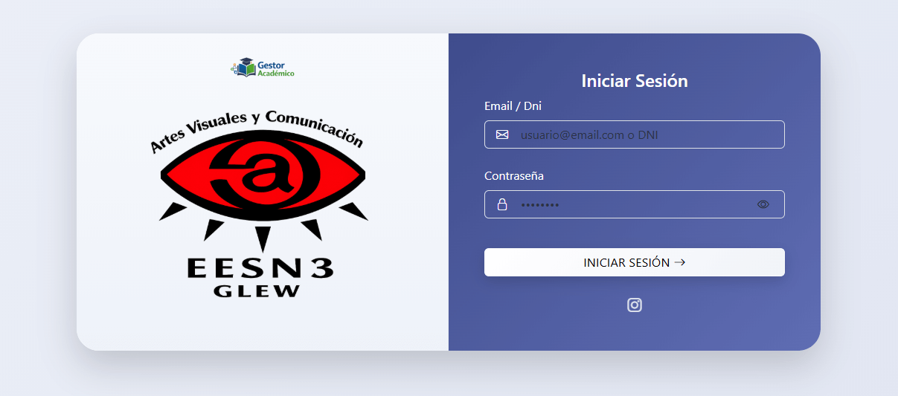

Gestor Académico
Sistema web integral para la gestión académica de alumnos, asistencia y calificaciones, desarrollado para la institución educativa EES N°3 Glew. Permite a docentes y administradores registrar notas, gestionar horarios de clases, controlar asistencia diaria, generar reportes de rendimiento académico y mantener la información organizada de manera segura y eficiente. Además, incluye funcionalidades de administración de cursos, gestión de docentes y seguimiento individual de alumnos, optimizando los procesos internos de la institución.

Problema
La institución educativa gestionaba la información académica mediante múltiples planillas y procesos manuales. Esto generaba dificultades para mantener los datos actualizados, realizar seguimientos académicos y generar reportes confiables.
- Duplicación de información en diferentes planillas
- Dificultad para generar boletines y reportes
- Errores en la carga de notas
- Pérdida de tiempo administrativo
Solución
Se desarrolló un sistema web centralizado que permite administrar alumnos, asistencias y calificaciones desde una única plataforma accesible para docentes y personal administrativo.
El sistema automatiza procesos académicos clave y permite un seguimiento más eficiente del rendimiento estudiantil.
Funcionalidades principales
Gestión de alumnos
Alta, edición y administración de estudiantes, incluyendo legajos completos y seguimiento individual.
Gestión de calificaciones
Carga, seguimiento y análisis de notas por materia y alumno, con dashboard de rendimiento.
Control de asistencia
Registro diario de asistencia con reportes automáticos y notificaciones a docentes y padres.
Generación de boletines
Reportes académicos y documentación generada automáticamente, listos para impresión o envío digital.
Sistema de roles y permisos
Permisos diferenciados para docentes, administrativos y directivos con dashboard centralizado.
Horarios y notificaciones
Gestión de horarios de clases, alertas automáticas y notificaciones para docentes y estudiantes.
Arquitectura y tecnologías
HTML
Frontend

CSS
Frontend

JavaScript
Frontend
Node.js
Backend
Express
Backend

MongoDB
Base de datos
MVC
Arquitectura
REST API
Arquitectura
Hostinger
Hosting
JWT
Backend / Seguridad
Impacto del proyecto
El sistema permitió centralizar la información académica y optimizar procesos administrativos, reduciendo significativamente el tiempo dedicado a tareas manuales de gestión escolar.